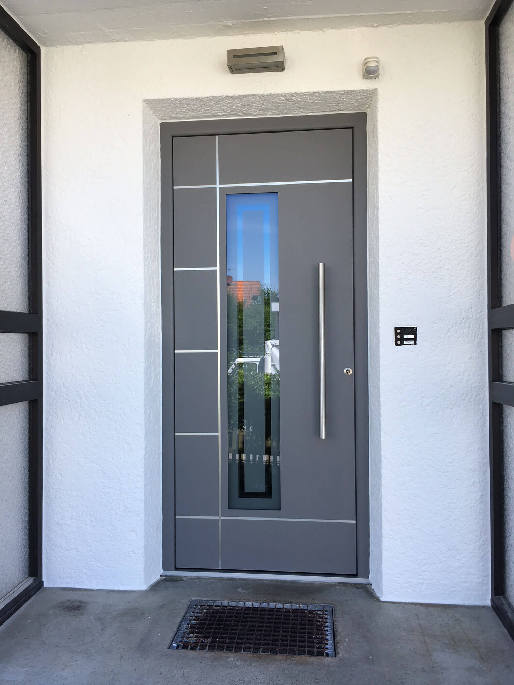

⇔
26 Beispiele
Haustüren
Von der alten Holztür zur modernen Sicherheitstür — alle mit Schieberegler vergleichbar.
Alle ansehen →
10 Beispiele
Fenster
Fenstertausch vorher und nachher — Kunststoff und Aluminium-Systeme.
Alle ansehen →
5 Beispiele
Nebeneingangstüren
Keller- und Nebeneingangstüren — funktional und sicher erneuert.
Alle ansehen →